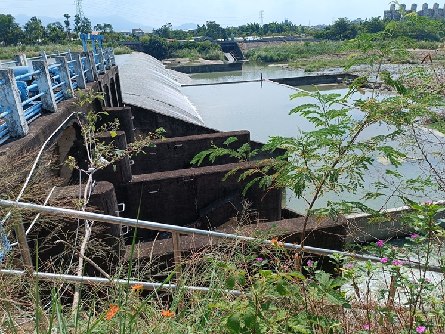

4. 實地走讀：我們的發現之旅
我們用雙腳、單車和相機，記錄了道將圳沿線的歷史遺跡、生態亮點與環境問題。

學生在鐵馬道上騎行經過水圳
沿線重要景點
- **渠首工 (取水口)：** 了解道將圳的引水系統與水利智慧。
- **糯米橋遺跡：** 見證清代建築工法與歷史痕跡。
- **渡也詩碑：** 感受水圳對在地文學與人文的影響。
- **城市廊道：** 觀察水圳如何融入現代城市景觀與居民生活。
走讀足跡：風景與歷史的交會

1. 渠首工 (取水口)
取水工程的起點，水圳生命的源頭。
2. 映月橋
現代景觀設計與市民休憩功能結合。

3. 糯米橋遺跡
清代先民智慧的結晶，歷史的見證。

4. 渡也詩碑
讚頌古老水圳滋養灌溉嘉義的貢獻與歷史意義。
5. 太陽館
見證道將圳穿越北回歸線、滋養嘉義平原。